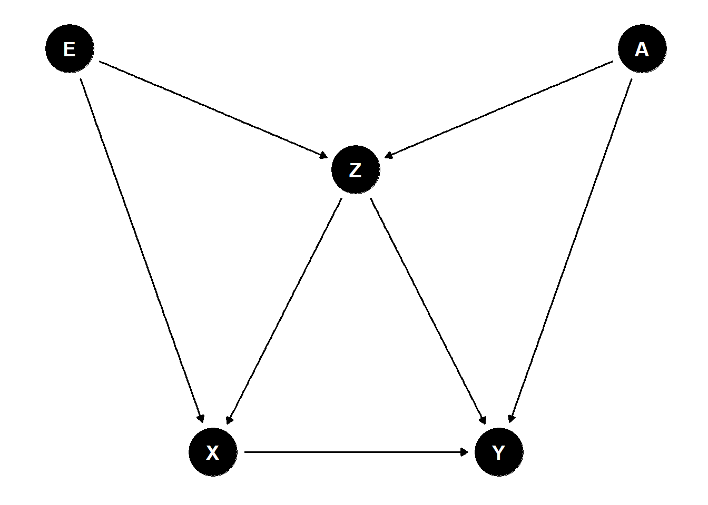

Introduction
Two years ago I came across Pearl’s work on using directed cyclical graphs (DAGs) to model the problem of causal inference and have read the debate between academics on Pearl’s framework vs Rubin’s potential outcomes framework. Then I found it quite intriguing from a scientific methods and history perspective how two different formal frameworks could be developed to solve a common goal. I read a few papers on the DAG approach but without fully understanding how it could be useful to my work filed it away in the back of my mind (and computer folder).
Recently, I had the pleasure of trying to explain to a colleague of mine what a confounding variable is. I find it much easier to use an analogy when explaining these kinds of statistical concepts. One of my favourite examples to give is the problem of determining the effect of hospitalisation on mortality. Here, health plays the role of the confounding variable. Explaining confouders in terms of the potential outcomes framework would go something like this:
To determine the effect of hostpitalisation on mortality we would ideally like to randomly assign individuals to hospitals. In reality, this is not the case and individuals admit themselves to hospitals based on their health status which is correlated with both hospital admission and mortality. An estimation of hospitalisation on mortality will be problematic since we will also be capturing the effect of health on both variables.
Normally this does the trick and people eventually get the idea. However, if someone asks for a more technical explanation it gets a little tricky. One has to write down the conditional independence / ignorability assumption (\(Y_{i1}, Y_{i0} \perp T_{i}\)) and start explain the idea of potential outcomes and different worlds.
This time round, I tried something different. I drew a directed acyclic graph (DAG), with health, \(Z\), as a common cause affecting both hospitalisation, \(X\), and mortality, \(Y\).

I think the idea got through more clearly and the resulting concept of controlling for health (as a modified DAG without the edge from health to hospitalisation) was also simple to convey. Modelling causal effects as DAGs also seem quite natural and this is also the way instrument variables are taught.
As it turns out, Pearl has a full framework for modelling causality using a graphical framework. This rekindled my interest in the subject and I spent the last month going through Pearl, Glymour and P.Jewell’s Causal Inference in Statistics: A Primer (2016) and came away with a deeper appreciation of the benefits of causal analysis using DAGs. In this post I detail my three biggest takeaways from the book and how DAGs can contribute to better causal inference.
Pearl’s Causal Model and the Potential Outcomes Framework
Despite the arguments between both schools of thought, I actually see them as complementary approaches but with a different starting point. Let’s start with a brief recap of the potential outcomes framework and a summary of Pearl’s approach.
Potential Outcomes
In the potential outcomes framework, the problem of estimating a causal effect is framed as a missing data problem. One only gets to observe a particular state of the world - either an individual receives a treatment or he does not. If we could observe both states of the world, the causal effect would then be the difference between the treated and the untreated state (\(Y_{i1} - Y_{i0}\)). Of course this is not equal to the difference between those observed taking the treatment and those not on the treatment, \(E[Y_{i} \vert T_{i}=1] - E[Y_{i} \vert T_{i}=0]\), since there are other factors that affect the taking of treatment and the outcome. However, if one could assign the treatment randomly, the causal effect can then be derived. Hence, the saying goes “no causation without manipulation”.
Pearl’s Causal Model
Pearl describes the idea of a structural causal model as a set of variables and relations that describe how nature assigns particular values to certain variables of interest i.e. structural equations. Formally, this could be written as a set of two kinds of variables \((U,V)\), where \(U\) denotes a vector of exogenous variables determined outside the model and \(V\) denotes a vector of endogenous variables. The model is completed by a set of functions, \(F\), that assigns each endogenous variable a value based on the other variables in the model with a constraint that the mapping is acyclic.
The structural causal model can then be translated to a DAG where the nodes represent the variables \(U\) and \(V\) and the edges between the nodes represent the set of functions, \(F\).
For example, the causal model defined by: \[ \begin{aligned} U = \{W, Z\}&, ~~V=\{X,Y\}, ~~F=\{f_{X}, f_{Y}\} \\ f_{X} &: X = 2W - Z \\ f_{Y} &: Y = -2X - 3Z \end{aligned} \] can be translated to the following DAG:

Intervening (or randomising) on a particular variable (e.g. \(X\)) is translated to removing the arrows then goes into that variable. Doing this graph surgery on the above example we get the modified graph:

In Pearl’s notation, we are interested in finding out the effect of \(P(Y=y \vert do(X=x))\) where we intervene to fix \(X\) at a particular value, e.g. \(x\). Establishing whether a causal effect of a certain variable of interest can be determined from a particular causal model can then be translated to examining the structure of the graph for certain properties which allow for such an effect to be determined. If so, the causal effect could theoretically be calculated from the conditional probabilities produced by the relationships given in the graph. Pearl introduces a set of methods (do-calculus) to translate the do operator into conditional probabilities that could be calculated with observational data. He also establishes the potential outcomes model as a special case of the graphical approach.
Converting a structural equation to a graphical model has its pros and cons. One downside is that it does not encode information about the functional relationships between variables beyond the direction of causation. This makes it hard to model identification strategies which depend on certain functional relationship between variables in this framework. For example, it does not capture the nuances of a regression discontinuity design (RDD) where a discontinuity in a certain variable of interest is used to infer its causal effect on an outcome variable, which one expects to otherwise vary linearly. The difference in difference approach is also hard to represent using DAGs since it involves certain assumptions of how variables change in a linear fashion over time.
Despite these limitations, I think there are areas in which adopting a DAG approach to modelling brings substantial benefits and clarity. In the following section, I discuss my three biggest takeaways on how an understanding of DAGs can contribute to better modelling of causal effects. First, DAGs make explicit what should be controlled for and what should not. Second, DAGs are useful as a heuristic tool to make assumptions and relationships between variables clear. Third, I introduce a novel identification strategy which Pearl calls the front-door criterion.
Benefits of the DAG approach
1) To control or not to control
The central problem of all selection on observables problem can be reduced down to the following saying, “To control or not to control - that is the question”. The DAG approach offers a practical tool-set to guide anyone facing such difficult questions in life. This is an advantage over the potential outcomes framework which offers the following rule, \(Y_{i1}, Y_{i0} \perp T_{i} \vert X_{i}\), the conditional ignorability assumption, as its guiding principle. However the statement does not make it explicit what variables should be controlled for.
One class of variables that should be controlled or adjusted for are common causes (factors which affect both the variable of interest and the outcome). I believe this is what most researchers have in mind what they select their choice of control variables. Yet, the important question that needs to be ask is the following - is this set of variables sufficient for inferring the causal effect?
The answer as it turns out is not quite. Before we examine what needs to be controlled for, I will give a quick overview on the three main components of every graphical model and how controlling for certain variables creates statistical dependence or independence for the structures in question.
All causal graphs can be decomposed into the following three main structures:
1) Chains
2) Forks
3) Colliders
Chains
Chains are defined by three nodes and two edges, with one edge directed into the middle variable and one edge directed out of it:

Without controlling for anything, any two variables in a chain are correlated. However, two variables at the edge of the chain \((Z\) and \(X)\) are independent given any variable in the middle of the chain \((Y)\).
Forks
Two edges originating from a central variable makes up a fork:

Since the variables share a common cause, they are correlated with each other. However, conditional on the common cause \((X)\) the other two variables \((Z\) and \(Y)\) are independent.
Colliders
As the name suggests, a collider is a struture formed when two nodes have edges directed into one common node:

In this case, the two variables, \(Z\) and \(X\), are independent. However, conditioning on the collision node, \(Y\), creates a dependency between the two.
Graphs, paths and d-seperation
Let’s move from these small components to a larger graph. In a larger graph, two variables / nodes are independent if every path between them are blocked. Otherwise, they are likely dependent. Or in Pearl’s terminology d-separated vs d-connected. Without conditioning on any of the variables, only colliders can block a path. However, if a set of variables, \(Z\), is conditioned on, the following kinds of formation can block a path:
- A chain or fork whose middle node is in \(Z\).
- A collider that is not in \(Z\) and whose descendants are also not in \(Z\).
The discussion on forks show the importance of controlling for common causes in order to infer the causal effect but is this sufficient for inferring the causal effect? Consider the following scenario where \(X\) is the variable of interest and \(Y\) is the outcome variable:

Controlling for the common cause, \(Z\), eliminates \(Z\) as a cause of bias but it induces a dependency between \(E\) and \(A\) which means that a causal effect cannot be estimated. It turns out that one has to condition on one of the following variable sets: \(\{E, Z\}\), \(\{A, Z\}\) or \(\{E, A, Z\}\) for the true effect to be estimated. Hence, controlling for a common causes is not sufficient to estimate the causal effect.
Backdoor criterion
The above set of variables fulfill what Pearl calls the backdoor criterion. These are sets of variables that satisfy two important rules:
- they do not contain a descendant of \(X\)
- and they block every path between \(X\) and \(Y\) that contains an arrow into \(X\)
The backdoor criterion can be useful when particular parent variables are not observed but we can condition on other child nodes to block the path between \(X\) and \(Y\).
The DAG approach also shows what variables that should not be adjusted for. Consider the following modified graph:

Here, controlling for \(Z\), a collider node, introduces a bias when we could simply get away with comparing the bivariate relationship between \(X\) and \(Y\). In this case, controlling for more variables is not necessarily better and the DAG provides a systemic method on what variables to control and what not to.
2) DAG as a heuristic tool
Next, I will discuss the use of DAGs as a heuristic tool. This is related to the first part on what to control but extends beyond it by discussing the use of DAGs as a way of evaluating identification strategies. I see two main benefits of the approach, first, as a way of explaining the thought process behind specification testing procedures and second, as a method of assessing instrument variables.
Specification testing
Specification testing refers to the procedure where variables are incrementally added to a model and the coefficient of interest is interpreted across these different specifications and used to draw a conclusion about the variable of interest. Let us examine one such example which Gelbach (2014) discusses. It is adapted from Levitt and Syverson (2008) where the authors were trying to determine the causal effect of agent home ownership (whether the property agent owns the home or not) on sale prices in order to show an empirically interesting example of the principal-agent problem. The authors argue that agents have an incentive to sell a house quickly and at a lower price since they only receive a small commission from the sales but bear most of the expense related to the sales. However, when agents are selling their own houses, they would have the incentive to maximise the sales price. Hence, it would be expected that agent ownership of a house would lead to a higher final sales price. Here are the results of the specification tests which Levitt and Syverson conducted:

The main difference appears to be when basic house characteristics is added into the model. Levitt and Syverson conclude that the other controls have a small impact on agent ownership. Gelbach points out that this conclusion is mistaken:
However, it is possible that the scale and basic-amenity variables are correlated with detailed indicators of house quality, description keywords, and block dummies. Thus, it is possible that the coefficient on the agent dummy would move just as much when any of these other sets of covariates is added before adding the basic scale and amenity characteristics.
Denote agent ownership with \(X\), sales price with \(Y\), house characteristics with \(C\), quality with \(Q\), and keywords with \(K\) (I omit block effects for the sake of brevity). The only situation in which one could come to the conclusion of Levitt and Syverson is if house quality, keywords and block effects all act as independent confounders:

Yet, Gelbach is still not being precise enough when he hypothesise that house characteristics could be ‘correlated’ with the other control variables. There are many possible causal models that could create a correlation between these variables, but the main takeaway and interpretation would differ depending on which causal model is true. Hence, it is necessary to come up with a causal story even before one can properly interpret the coefficients.
From the variable names and descriptions, it could be possible that Gelbach has the following causal model in mind: An unobserved factor of housing quality, \(U\), is a direct cause of the other variables (\(C\), \(Q\), \(K\)) and each of these variables serve as a proxy for the same underlying cause: 
Under such a hypothetical pathway, controlling for \(C\) would serve two purposes: it would block the path from \(C\) to \(Y\) and also act as a proxy for \(U\). If the proxy effect dominates then one could come to the conclusion of Gelbach that the coefficient on the agent dummy would move just as much if any of the other control variables were added first. However, if one were to believe such a model, the only meaningful specification would be to include all the controls (i.e. block all confounding backdoor paths between \(X\) and \(Y\)) and an additive interpretation, as well as all other earlier specifications, would make no sense.
Of course, one could also propose another causal model in which an agent’s experience or network affects the selling price as well as housing quality, but not home ownership. In this case, conditioning on housing quality induces a bias (as a result of conditioning on a collider node) and it would make sense to present both specifications to show that the agent effect is positive in both of the scenarios. In short, the different specifications presented should come from theories or hypothesised relationships between variables rather than a page-filling statistical exercise.
Instrumental variables (IV)
The IV approach could be summarised by the following DAG:

\(Z\) is the instrumental variable and it affects \(Y\) only through \(X\). The economics literature emphasise the importance of an instrument fulfilling two conditions:
- Instrument relevance, where the instrument is strongly correlated with the endogenous variable of interest
- Instrument validity, where the instrument is exogenous conditional on the control variables and satisfy the exclusion restriction (i.e. affects the outcome only through the variable of interest)
DAGs are a useful tool to help examine whether the proposed instruments satisfy the exclusion restriction criteria. When doing so, two things should be considered:
- Possible pathways between the instrument and the outcome variable
- Possible pathways between the instrument and the variable of interest
Let us consider one of the most popular instruments in the literature - rainfall and use Miguel, Satyanath and Sergenti (2004) as an example. In this paper the authors use rainfall as an instrument to find the causal effect of economic growth on civil conflict. Rainfall is shown to be a good predictor of economic growth in sub-Saharan Africa since these countries are very reliant on the agriculture industry and do not have extensive irrigation systems or stable water sources. After controlling for a variety of variables including ethnolinguistic fractionalization, religious fractionalization, democracy, per capita income, population, percentage of mountainous terrain, oil exports and fixed effects they found that a negative growth shock leads to conflict in the following year.
Side-note: I remember first being introduced to the concept of IVs by a developmental economist and marveled at the brilliance of rainfall as an instrument. It cannot be affected by any variable (i.e. exogenous) and can be used to determine the effect of growth on civil conflict, democratic institutions and remittances in Africa, riots on housing prices in the U.S. and the effect of poverty (rye price) on violent crime in 19th-century Germany. Maybe too much of a good thing should have raised some red flags?
Examining the pathway between rainfall and growth, it is clear that growth cannot affect rainfall (at least in the short and medium term). The author also describes a plausible channel which rainfall affects growth and backs this up with the first stage regression estimates.
Next, we have to consider the pathways between rainfall and conflict. Again, I think it is fair to rule out any other channels which causes rainfall (i.e. any arrows pointing towards rainfall) but this still leaves all sorts of possible influences of rainfall on conflict, i.e., it is hard to justify the exclusion restriction. The restriction only holds if the set of controls, \(C\), blocks all possible causal channels between rainfall, \(Z\), and civil conflict, \(Y\):

The authors try to address the potential violations of the exclusion restriction by examining other channels such as tax revenue, road networks and heatwaves and argue that these factors do not affect their estimates and ‘other effects are likely to be minor’. However, I believe there are other obvious intermediate channels where rainfall could affect civil conflicts directly. One example, pointed out in the appendix of the paper, is that of mass migration due to droughts. Another possibility is rainfall (either too little or too much) directly preventing riots from forming (it was used an as instrument on riots in a study in a U.S. based study).
The main benefits of DAGs here is to keep track of the assumptions made and the validity of the arguments. It also helps the reader from getting side tracked by the controls that the author included and promotes better thinking of potential pathways in which an identification strategy could be compromised.
3) Front-door criterion
My third insight from the book was a possibly new method of teasing out causal effects which Pearl et al. called the front-door criterion. In the first section of the post, I touched on the backdoor criterion where the variables which satisfy this criterion blocks all backdoor path from the variable of interest to the outcome. The front-door criterion considers all variables that are descendants of the variable of interest and mediates between the variable of interest and the outcome. More concretely, a set of variables, \(Z\), satisfy the front-door criterion if
- \(Z\) intercepts all paths between \(X\) and \(Y\)
- All backdoor paths from \(Z\) to \(Y\) are blocked by \(X\)
- There are no other paths between \(X\) to \(Z\)
In a way the front-door criterion is quite similar to the instrumental variable method but instead of affecting the outcome only through the variable of interest, it is the only channel which the variable of interest can affect the outcome. As Alex Chino notes in his blog post, ‘rather than focusing on exogenous variation in treatment selection, this approach exploits exogenous variation in the strength of the treatment.’
Pearl gives an example of trying to ascertain the effect of smoking, \(X\), on lung cancer, \(Y\). Genotype, \(U\), is an unobserved confounding variable but we know that smoking only causes lung cancer through the amount of tar deposits, \(Z\). This can be modeled by the following DAG:

In this example, we cannot block the back-door path since genotype is unobserved and hence, cannot directly estimate the effect of \(X\) on \(Y\). Instead, identification comes from our knowledge of the effect of \(X\) on \(Z\), which we can directly estimate, and the effect of \(Z\) on \(Y\) which we can estimate by controlling for \(X\) as this blocks the backdoor path between \(Z\) and \(Y\). The overall effect of \(X\) on \(Y\) can then be derived by chaining the effect of \(X\) on \(Z\) and \(Z\) on \(Y\). Interested readers can read the book for a more complete mathematical treatment.
The blog linked above gives some examples where it is used in the economics literature. One of the more interesting and convincing application is that by Cohen and Malloy (2010) who examined the link between social ties and congressional voting. Social ties is inferred by the colleges which the congressmen attended and there could be many factors driving both college and voting decisions. Instead of looking for an instrument, the authors exploit the channel through which social ties affect votes (namely the seating arrangement in the senate chamber). Since seating for rookie senators are randomised they were able to estimate the effect of social ties on voting outcomes based on exogenous variation in the mediating channel.
The number of assumptions needed to make the front-door criterion believable is quite high but at least it has not been used (and misused) to death like the instrumental variable method. The main difficulty of this method is that it requires one to make a causal claim on the pathway between the variable of interest, the mediating variable and the outcome. This is a large claim to make but in a way it is similar to arguing over the exogeneity of an instrument or whether it fulfills the exclusion restriction.
Conclusion
In this post, I highlighted 3 benefits of modeling causal effects in a DAG framework. The book discusses other interesting points such as the correspondence between the graphical framework and the potential outcomes framework as well as direct vs indirect effects which are worth a read. I hope you found this article useful and if you are interested in causal analysis please go check out Pearl, Glymour and P.Jewell (2016).